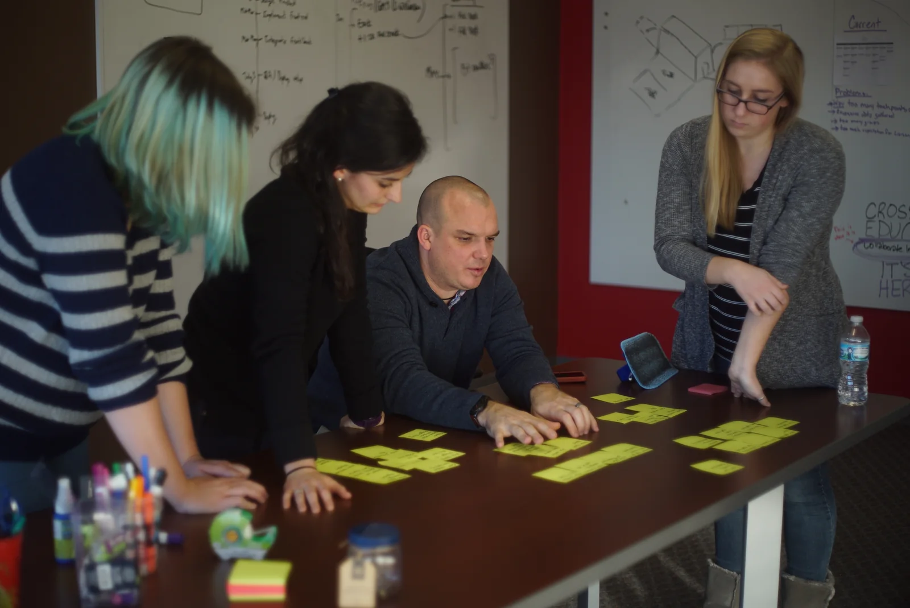
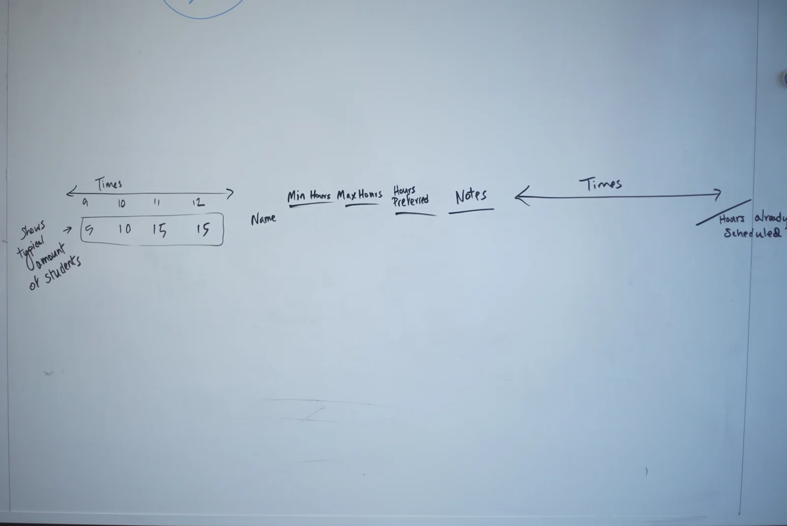
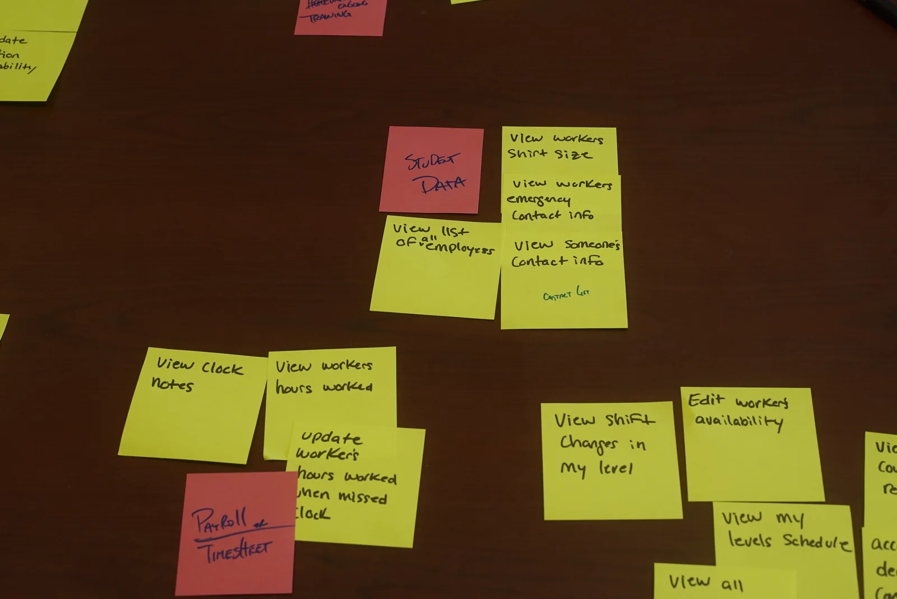

01 / Crossroads Education
A staff-led
attendance flow
Observation and stakeholder interviews helped our team rethink attendance in Element, a learning-center platform.
01 / Team research → interface
Junior UX designer · Team project

Role dates: 2017–2020 · Case-study duration not specified.
Team research contribution · Qualitative feedback. Study-planning and recruitment records are not included.
My role
I worked with the lead UX designer and CTO across Element and Nexus. My contribution covered interviews, research, UI-system work and interaction design. I maintained the Adobe XD design library and used UI testing scripts; I did not implement the application code.
Connect the finding to the decision.
- Observed
- Some children could not spell their names or recall their student IDs. The director was already signing students in individually.
- Constraint
- Student information could not be openly exposed, and school network/API access was not available to the team.
- Team decision
- Move attendance to a separate director screen with bulk sign-in.
- Feedback
- Staff responded positively. The documented outcome is qualitative; no measured time savings are claimed.
Research scope and evidence
This case documents my contribution to a team project and the connection between research, constraints and a design decision.
The original study plan, recruiting materials, participant counts and analysis outputs are not included in this portfolio. The outcome described here is qualitative staff feedback.
Read the observation and constraints in full
Choose a class at the MAC.
The Mathematics Assistance Center check-in flow let students select the class or reason for their visit.
Observe individual check-in.
Individual check-in was slow. Some children did not know how to spell their names or recall their student ID numbers. The Learning Center Director was already signing students in one at a time.
Work within the school’s constraints.
Student information could not be openly exposed. Connecting to the school attendance system would have required network/API access the school was not comfortable granting.
Move attendance to the director.
We created a separate attendance screen for the director, moving to a staff-led bulk sign-in flow.
This was a team decision and implementation, informed by observation and stakeholder interviews.
The decision in the interface
One action for the selected students.
The staff-led flow brings the bulk sign-in action beside the attendance list.
Detail view. Select the image to inspect the full layout.
Try the attendance demo →
Keep staff feedback in the process.
Staff responded positively to the bulk sign-in change. Interviews and weekly meetings with Learning Center Directors kept day-to-day issues, rollout plans and feedback in the design process.
Explore the updated interfaces
Updated check-in and attendance.
The updated demos keep the original MAC mark and use sample students. Attendance is saved only in this browser.
The MAC clip follows class selection through confirmation. The Element clip shows bulk sign-in and the return to the attendance list.
Other Crossroads work.
The workshop photos and scheduling sketch document our team process. The Nexus prototype shows search in a tutoring knowledge base.
Methods described in this case
Review the structure before the screens.
- Card sorting
- Personas
- User flows
Used with the team to review information architecture before developing screens.


Select the image to enlarge
Organize information with the team.
I used open, closed and hybrid card sorting, personas and user flows to review information architecture with the team before developing screens.
The task-grouping photo and schedule sketch show the team organizing staff information, hours and scheduling. They document the design process, rather than a measured usability result.


Select the image to enlarge
Typical student demand arranged by time.
Minimum, maximum and preferred hours, with notes.
A separate time strip for hours already scheduled.
Present-day annotation of the visible labels in the original team sketch. This explains the artifact; it is not an additional research finding.
Original team sketch, shown in a detail view. Select the image for the full photograph.
View the full-size sketch
Research and prototype artifacts.
Reading the original notes
Everyday staff tasks, made visible.
- Staff information
- “View someone’s contact info”
- Hours worked
- “View workers hours worked”
- Scheduling
- “Edit workers availability”
Selected transcription of visible notes. These labels explain the artifact; they are not additional study findings.


Select the image to enlarge
Tasks for staff information, hours and scheduling, grouped during the workshop.
View the full-size task grouping
Nexus working notes, 2018 Selected transcription
The Nexus notes group saved work into notebooks with access controls and version history. They also describe search and the handoff between student and tutor.
- Shelf
- A group of Notebooks.
- Notebook
- A group of sections and/or pages inside of shelves.
- Page
- An individual saved canvas that can exist inside of a notebook, section, or sub-section.
- Canvas
- A collaboration space that users can work in.
Proposed tutor flow: ask a question → join the queue → work with a tutor → confirm understanding → review the session for the knowledge base.
Source access: selected transcription only. The original export is not included in this portfolio. Capitalization is preserved.
Proposed tutor flow, condensed from the working notes.
An original interaction study showing a search of the tutoring knowledge base.
Check the interaction states.
I also worked on transitions between UI states and used Cypress to test the actions available in each state. These were UI checks, separate from research with participants.